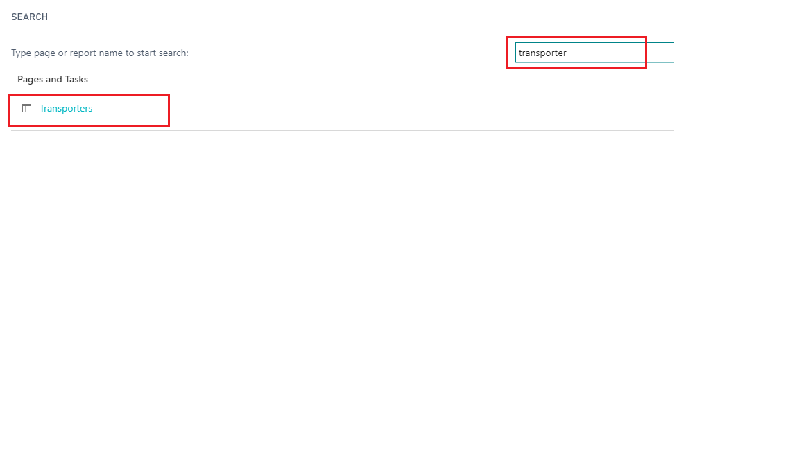
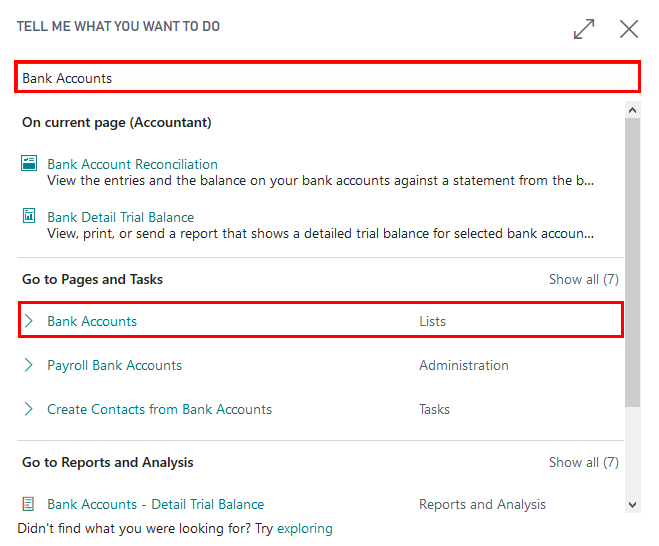
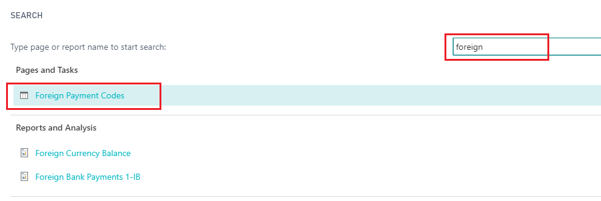
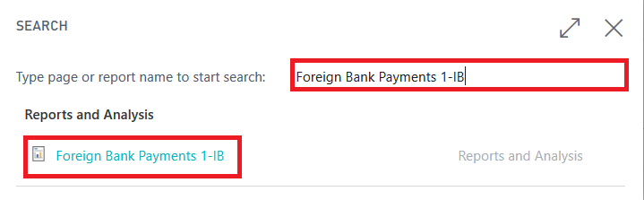
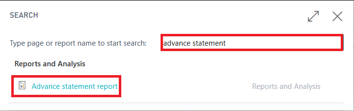

Key Usage Scenarios
Walkthrough: Create evaluation company
About this walkthrough: Configuration package BASE-EVALUATION is to be imported into an evaluation company, in order to check the setup.
Roles: No specific user roles are required.
Story: You are John Roberts, assigned by Cronus International to be a CFO in Cronus. The company runs business in the sphere of sales of furniture and rendering consultation services related to interior design upon request of local customers.
Cronus is required to run accounting processes according to Latvia local requirements. You are assigned to test the settings on an evaluation company before adding the settings to Cronus Latvia, SIA.
Availability: can be accessed from Search for Page or Report…
Pre-requisites: No pre-requisites required
Create Evaluation Company
- Click on the button Search for Page or Report...
- Type Companies and select Companies from Lists
- Press New, select Create New Company, press Next
- Enter company name, for example, BASE-EVALUATION; set Evaluation-Sample Data in field Select the Data and Setup to Get Started
- Press Next, Next, Finish
- In My Settings, select your evaluation company
Walkthrough: Enter Registration number for Customer
About this walkthrough: Registration number is used in preparing bank export files and on document printouts, that are handed out to customers or vendors. This walkthrough demonstrates the process for entering registration numbers for customer in Customer card.
Roles: No specific user roles are required.
Story: You are John Roberts, assigned by Cronus International to be a CFO in Cronus. The company runs business in the sphere of sales of furniture and rendering consultation services related to interior design upon request of local customers.
Cronus is required to use customer company registration number on official documents sent to the customer. Your task is to and enter the company registration number for Customer 10000.
Pre-requisites: Master data catalogues to be created and configured.
Steps:
- Click on the button Search for Page or Report...
- Type Customer and select Customers from Pages and Tasks
- Open Customer Card for Customer 10000
- Enter Customer Company Registration number (40003687406)
- Customer Card is complete.
Walkthrough: Create Transporter
About this walkthrough: Each company may keep a list of transporters, where it includes vehicle and driver information for its own transport or external service provider transport. This walkthrough demonstrates the process for creating a transporter card.
Roles: No specific user roles are required.
Story: You are Linda Martin, a manager in Cronus. The company runs business in the sphere of sales of furniture and rendering consultation services related to interior design upon request of local customers. Cronus has signed a contract with local transportation company who would deliver sales orders to customers. Your task is to create new transporter card for “JL Logistics, SIA” mentioning the vehicle and the driver.
Prerequisite: No specific prerequisites are required
Steps:
- Click on the button Search for Page or Report...
- Type Transporter and select Transporters from Pages and Tasks 
- Press New, in order to create New Transporter card
- Enter Code – JL_VWTRANSP
- Enter Name, Surname – (Jānis Liepa) for particular Driver
- Enter Vehicle Reg.No.- (LP 147)
- Enter Company Name- (JL Logistics, SIA)
- Enter Company Reg. No.- for Corporate Delivery Service providers (40003336661)
- Enter Company address - legal address of the Delivery Service provider (K.Ulmaņa gatve 160, Rīga)
- Transporter card is created and may be used in sales, purchase and transfer documents.
Walkthrough: Create payment file for bank
About this walkthrough: This walkthrough demonstrates the process for creating payment files in ISO format that can be uploaded into Banking Online of commercial banks of Latvia.
Roles: No specific user roles are required.
Story: You are Richard Lum, assigned by Cronus International to be a manager in Cronus. The company runs business in the sphere of sales of furniture and rendering consultation services related to interior design upon request of local customers. Cronus is required to create a payment of outstanding vendor invoices. Your task is to create a payment file in ISO (SEPA) format that can be uploaded into your commercial bank online.
Prerequisite: Import data exchange definition, Add Bank Import Export Setup, New No. Series created, New Bank Account Card, Update Vendor Card, New Vendor Bank Account Card, New Payment Journal Batch.
Steps Import data exchange definition
- Click on the button Search for Page or Report...
- Type Data Exchange Definitions
- Import Data Exchange Definition SEPA CD.TXT
- Review imported Data Exchange Definition SEPA CAMT CD

Create Bank Import Export Setup
- Click on the button Search for Page or Report...
- Type Bank Export/Import Setup
- Create New Bank Import Setup
- Code- SEPA CAMT CD
- Name - Current Day
- Direction - Import
- Processing Codeunit ID - 1270
- Data Exchange Definition Code - SEPA CAMT CD
Create New No. Series
- Click on the button Search for Page or Report...
- Type No. Series and select No. Series
- Create new No. Series for Credit Transfer Messages
- Code - CT-MSG
- Description- Credit Transfer Msg. ID
- Default Nos. - checkmark inserted
- Create No.Series lines for this No. Series
- Complete the lines with following
- Starting No. - CT-MSG000001
- Ending No. - CT-MSG999999
- Increment by No.- 1
- Review created No. Series
Create New Bank Account Card
- Click on the button Search for Page or Report...
- Type Bank Accounts and select Bank Accounts from Pages and Tasks 
- Create new Bank Account card

- Complete the new Bank Account card with the following data
- No. - B010
- Name - CHECKING EUR
- Bank Account No. - LV11PARX1111111111111
- Credit Transfer Msg.Nos. - CT-MSG
- Country/ Region Code - LV
- Currency Code - EUR
- Bank Account Posting Group - CHECKING
- Swift code - PARXLV22
- IBAN - LV11PARX1111111111111
- Bank Statement Import format - SEPA CAMT CD
- Payment Export format - SEPACT
Add information in Vendor Card
- Click on the button Search for Page or Report...
- Type Vendors and select Vendors from the list
- Open Vendor card for the Vendor 30000
- Expand Invoicing section and complete the following
- Currency Code - EUR
- Registration No.- DE134578
- Expand Payments section and press drop down for Preferred Bank Account, then press New
- Complete Vendor Bank Account as follows:
- Code - EUR001
- Name - Citadele Banka AS
- Address - Republikas laukums 2
- Country/Region Code - LV
- Currency Code - EUR
- Bank Account No. - LV11PARX1111111111112
- Swift code - PARXLV22
- IBAN - LV11PARX1111111111112
- Press OK
- Review that Preferred Bank Account is set to EUR001
Create new payment journal batch
- Click on the button Search for Page or Report...
- Type Payment Journals and select Payment Journals
- Open Payment Journal batches

- Create New Payment Journal Batch
- Complete Name, Description of new Payment Journal Batches
- Name - EUR
- Description - EUR payments
- Balancing Account Type - Bank Account
- Balancing Account No. - B010
- No. Series - GJNL-PMT
- Copy VAT Setup to Jnl. Lines- checkmark removed
- Allow Payment Export - checkmark inserted
- Click OK.
Create a new payment journal line and export the payment file
- Click on the button Search for Page or Report...
- Type Payment Journals and select Payment Journals
- Set Payment Journal batch to EUR
- Complete payment journal line as follows:
- Posting Date - same as your work date
- Document type - Payment
- Account Type - Vendor
- Account No. - 30000
- Message to Recipient - Invoice 134
- Amount - 100
- Payment Method - Bank
- In the Ribbon press Export, in order to export SEPA payment file
- Save the file
Walkthrough: Import bank statement transactions
About this walkthrough: This walkthrough demonstrates the process for importing bank statement files in ISO format into Business Central.
Roles: No specific user roles are required.
Story: You are Richard Lum, assigned by Cronus International to be a manager in Cronus. The company runs business in the sphere of sales of furniture and rendering consultation services related to interior design upon request of local customers. Cronus is required to create a payment of outstanding vendor invoices. Your task is import bank transaction file in ISO (SEPA) format.
Prerequisite: Use file provided separately - CAMT052 sample.xml
Steps:
- Click on the button Search for Page or Report...
- Type Payment Reconciliation Journals and select Payment Reconciliation Journals from Pages and Tasks
- Press Import Bank Transactions
- Select bank account B1010, Press Choose, in order to proceed with selecting the bank statement file for import - CAMT052 sample.xml
- Proceed with transaction application automatically or manually
- After all transactions are applied and accepted, proceed with posting payment reconciliation journal by pressing Post Payment Only…
Walkthrough: Assign foreign payment code
About this walkthrough: National Bank of Latvia requires to specify foreign payment code for external incoming payments. When posting external incoming payments, a Foreign Payment Code needs to be assigned to particular transaction. Afterwards a Foreign Payment Report can be created. This walkthrough demonstrates the process for assigning foreign payment code for an incoming payment.
Roles: No specific user roles are required.
Story: You are Anette Hill, assigned by Cronus International to prepare Foreign Bank Payments 1-IB. The company runs business in the sphere of sales of furniture and rendering consultation services related to interior design upon request of local customers. You should assign a foreign payment code for incoming external payment and prepare the report.
Prerequisite: List of Foreign Payment codes needs to be completed. Created Customer Card, posted payment from the customer
- Click on the button Search for Page or Report...

- Type Foreign Payment Codes and select Foreign Payment Codes from Pages and Tasks 
- Create New Foreign Payment Code
- No. - 111
- Name - Preču eksports, imports
Steps:
- Click on the button Search for Page or Report..
- Type Payment Journals and select Cash Receipt Journals from Pages and Tasks
- Create a journal line with an incoming payment from a foreign Customer
- Posting Date (08.08.2019)
- Document Type – Payment
- Account Type: Customer
- Account No.: (4000 Alpine Ski House)
- Amount: -50 000.00
- Bal. Account Type: Bank Account
- Bal. Account No.: CHECKING
- Assign Foreign Payment Code: 111
- Post Journal
- Click on the button Search for Page or Report...
- Type Foreign Bank Payments 1-IB and select Foreign Bank Payments 1-IB from Reports and Analysis 
- Set Printing Options Printing Options:
- Year – enter year (2019)
- Month – enter month (August)
- Company Official – from the list of Company Officials (Anette Hill)
- Transaction Limit, LCY – (10 000)
- Press Print, in order to view the Report
Walkthrough: Import Currency Exchange Rates
About this walkthrough: transactions in foreign currencies are recorded in the system in local currency, based on currency exchange rate. Currency Exchange Rates may be uploaded into system either automatically on a regular basis using a job que entry or manually by user. The source of information is European Central Bank (http://www.ecb.int/stats/exchange/eurofxref/html/index.en.html). This walkthrough demonstrates the process for importing currency exchange rates.
Roles: No specific user roles are required.
Story: You are Anette Hill, assigned by Cronus International to import currency exchange rates.
Prerequisite:
- Click on the button Search for Page or Report...
- Type Config. Packages and select Config. Packages from Pages and Tasks
- Import Configuration Package LV.EXCHANGE.RATES by pressing Import Package... in the Ribbon
- Select the Config. Package LV.EXCHANGE.RATES from your file system
- Select LV.EXCHANGE.RATES package from list of Config. Packages and press Apply Package.
Configuration package ensures the following information:
- Data Exchange Definitions
- Currency Exchange Rate Update Setup
Steps: In order to enable the Currency Exchange Rate Service proceed with following steps:
- Click on the button Search for Page or Report...
- Type Currency Exchange Rate Services and select Currency Exchange Rate Services from Pages and Tasks
- Select ECB-EXCHANGE-RATES from Currency Exchange Rate Services and press Enable.
- Click on the button Search for Page or Report...
- Type Currencies and select Currencies from Pages and Tasks

- Press Import Currency Rates
- Set Import Currency Rates options Options:
- From Date – set the period start date for import
- To Date – set the period end date for import (by default is set to today)
- Curr.Exch. Rate Update Setup – select ECB-EXCHANGE-RATES
- Press OK
- Review the list of Currencies, where the Exchange Rate is updated. Review only the currencies that are supported by ECB, for example AUD.
Note: This will import currency exchange rates from European Central Bank for the period of 90 days, when Exchange Rate Services is enabled, it creates a Job Que Entry for Exchange Rate Services. European Central bank publishes currency exchange rates for the day at 15:15 each working day. All foreign currency accounting transactions should be recorded, using currency exchange rate, that is available at the beginning of the current day (published the previous day)- Exchange Rate Amount. If currency exchange rate for current date is available (after 15:15), then the value is displayed in field Adjustment Currency Exchange Rate Amount. Currency reevaluation is done based on Adjustment Currency Exchange Rate Amount at the end of the period. Foreign currency exchange rate amounts are calculated as amount of foreign currency per 1 EUR (1.00 EUR = 1.3317 USD).
Walkthrough: Prepare document printouts
Sales Prepayment Invoice
About this walkthrough: is prepared for customers as a sales prepayment invoice for goods not yet shipped provided as sales source document. The printout has all required data for sales prepayment document. This walkthrough demonstrates the process for printing sales prepayment invoice.
Roles: No specific user roles are required.
Story: You are Anette Hill, assigned by Cronus International. The company runs business in the sphere of sales of furniture and rendering consultation services related to interior design upon request of local customers. You should prepare sales order with 50% prepayment with customer 10000 therefore your task is to prepare a sales prepayment invoice.
- Choose the icon, enter sales orders, and click the related link.
- On the ribbon, on the Home tab, click New to create the prepayment sales order.
- Press ENTER to automatically insert a sales order number in the No. field.
- In the Customer field enter 10000 and move to the next field. The sales order header is automatically filled in with the default settings from the customer card.
- In the Document Date, Posting Date and Order Date fields, enter 08/10/2020.
- Expand the Prepayment FastTab.
- In the Prepayment % field, enter 50.
- In the Prepmt. Payment Terms Code enter 14 DAYS.
- Move to the Lines FastTab.
- In the first line enter the following information:
- In the Type field, enter Item.
- In the No. field, enter 1896-S.
- In the Quantity field, enter 1.
- In the Unit Price Excl. VAT field, enter 649.40.
- Print Sales Prepayment Invoice- Particular Print button LV Sales Prepayment Invoice is located in the Ribbon under the TAB ACTIONS, in section PRINT.
- Set Printing Options
Printing Options: the following printing options are available for this printout:
- Count of Copies – 0
- Print Payer – not marked as checked
- Print Amount in LCY – not marked as checked
- Print Salesperson Name – not marked as checked
- Print VAT Specification – not marked as checked
- View Printout
Note: document can be printed from unposted sales documents- Sales Order; printing this document does not create any postings.
Sales Invoice
About this walkthrough: is prepared for customers as a sales invoice for goods shipped as sales source document. The printout has all required data for sales prepayment document. This walkthrough demonstrates the process for printing sales invoice.
Roles: No specific user roles are required.
Story: You are Anette Hill, assigned by Cronus International. The company runs business in the sphere of sales of furniture and rendering consultation services related to interior design upon request of local customers. Your task is to prepare a sales invoice.
Pre-requisites: Master data catalogues to be created and configured.
Steps:
- Choose the icon, enter sales orders, and click the related link.
- On the ribbon, on the Home tab, click New to create the sales order.
- Press ENTER to automatically insert a sales order number in the No. field.
- In the Customer field enter 10000 and move to the next field. The sales order header is automatically filled in with the default settings from the customer card.
- In the Document Date, Posting Date and Order Date fields, enter 03/08/2020.
- Enter Sales Person code AH for Anette Hill
- In the first line enter the following information:
- In the Type field, enter Item.
- In the No. field, enter 1906-S.
- In the Quantity field, enter 1.
- In the Unit Price Excl. VAT field, enter 281.40.
- Move to a new sales order line.
- In the Type field, enter Item.
- In the No. field, enter 1964-S.
- In the Quantity field, enter 4.
- In the Unit Price Excl. VAT field, enter 125.10.
- Print Sales Invoice- Particular Print button LV Sales Invoice is located in the Ribbon under the TAB ACTIONS, in section PRINT.
- Set Printing Options
Printing Options: the following printing options are available for this printout:
- Count of Copies – enter 1, that will ensure printing of one original and one document copy
- Service invoice – should not be checked
- Print Payer – should not be checked
- Print Transporter – select Sender for Cronus Latvia to appear as Transporter
- Print Amount in LCY – should not be checked
- Print Salesperson Name – insert a checkmark
- Print VAT Specification – insert a checkmark
- Press Print
Transfer Invoice
About this walkthrough: Transfer of goods is required to be supported by a delivery note – transfer invoice. The document indicates the quantity and unit costs of goods transferred. This walkthrough demonstrates the process for printing transfer invoice. Transfer of goods is required to be supported by a delivery note – transfer invoice. The document indicates the quantity and unit costs of goods transferred.
Roles: No specific user roles are required.
Story: You are Anette Hill, assigned by Cronus International. The company runs business in the sphere of sales of furniture and rendering consultation services related to interior design upon request of local customers. Your task is to prepare a transfer invoice.
Pre-requisites: Master data catalogues to be created and configured.
Steps:
- Choose the icon, enter transfer orders, and click the related link.
- On the ribbon, on the Home tab, click New to create the transfer order.
- Press ENTER to automatically insert a sales order number in the No. field.
- In the Transfer From field select location code (MAIN), in Transfer to field select location code (EAST), set In-Transit code (OWN LOG.).
- In the Document Date, Posting Date and Order Date fields, enter 01/30/2020.
- Move to the Lines FastTab.
- In the first line enter the following information:
- In the Type field, enter Item.
- In the No. field, enter Item No. (1896-S).
- In the Quantity field, enter 2.
- Print Transfer Invoice- Particular Print button LV Transfer Invoice is located in the Ribbon under the TAB ACTIONS, in section GENERAL.
- Set printing options
Printing Options: the following printing options are available for this printout:
- No. of Copies – enter 0
- Print Company as Transporter – leave as unchecked
- Press Print
Walkthrough: Post Advance Holder Transactions and Prepare Advance Statement Report
About this walkthrough: Advance holder transactions are the procurements made by the Employee, that are considered as company expenses. When a procurement happens, an advance holder reports to the company about the expenditures that were made. This walkthrough demonstrates the process for recording, controlling and reimbursing employee expenses.
Role: No specific user roles are required.
Story: You are John Roberts, assigned by Cronus International to be a CFO in Cronus. The company runs business in the sphere of sales of furniture and rendering consultation services related to interior design upon request of local customers. Cronus is required to record employee expenses for John Smith and create Advance Statement report.
Pre-requisites: Master data catalogues to be created and configured. Vendor card to be created for John Smith.
- Click on the button Search for Page or Report...
- Enter Vendor, and click the related link.
- Apply Blank Vendor Card Template

- Complete Vendor Card information by entering
- Name - John Smith
- Gen Bus. Posting Group - DOMESTIC
- VAT Bus. Posting Group - DOMESTIC
- Vendor Posting Group - DOMESTIC

Steps:
- Click on the button Search for Page or Report...
- Enter Purchase Invoices, and click the related link.
- On the ribbon, on the Home tab, click New.
- Go to the General FastTab.
- In the Vendor Name field, select required vendor (50000 Nod Publishers).
Note Before processing next step
- Go to Personalize
- Press +Field, in order to add a field to General Fast TAB
- Select a field Posting Description and using drag and drop, place the field in the General Fast TAB of Purchase document.
6. In the Posting Description, enter “Consulting Services” 7. Complete Posting Date, Document Date fields with 06.04.2020 8. Enter Vendor Invoice No. AA-1334 9. Go to the Shipping and Payment FastTab. 10. In Pay-to select Another Vendor, in next field Name- select required employee (John Smith) 11. Move to the lines.
- In the Type field, enter G/L account.
- In the No. field, enter required expense account (8320).
- In the Quantity field, enter 1.
- In the Unit of Measure enter HOUR
- In the Direct Unit Cost Excl. VAT field, enter 100.

- Click Post.
- Click on the button Search for Page or Report...
- Type Advance statement report and select Advance statement report from Reports and Analysis 
- Set Printing Options Printing Options: the following printing options are available for this printout:
- Advance statement No. – enter number that should appear as document number on the printout (3)
- Vendor No. – select Vendor No. for Advance holder (John Smith)
- Date Filter – set date filter according to posted vendor ledger entries (01042020..30042020)
- Press Print and review the printout
Walkthrough: Inventory
Phys. Inventory Document
About this walkthrough: Company may perform a stock-take on regular basis, in order to control item quantities in system and in nature. This walkthrough demonstrates the process for recording and controlling physical inventory.
Role: no specific role required
Story: You are Richard Lum, Production Manager in Cronus International. The company runs business in the sphere of sales of furniture and rendering consultation services related to interior design upon request of local customers. Cronus International is required to perform an inventory stock take at 06/04/2020. Your task is to calculate stock for item 1896-S and prepare Physical Inventory Document.
Pre-requisites: Master data catalogues to be created and configured.
Steps:
- Click on the button Search for Page or Report...
- Choose the icon, enter Phys. Inventory Journals, and then choose the related link.
- Choose the Calculate Inventory action.
- In the Calculate Inventory window, specify the conditions to use to create the journal lines, such as whether to include items that have zero recorded inventory.
- Posting Date - 07.04.2020
- Document No. - INV034
- No. - 1896-S
- Choose the OK button.
- For first journal line Item 1896-S change Qty. (Phys.Inventory) set to 3
- Post Journal
- Choose the OK button.
- Enter Phys. Inventory Document in Search for Page or Report…

Note: The document can be printed only after the Phys. Inventory Journal lines are posted and Adjust Cost-Item Entries job has been successfully executed. 10. Set Printing Options
Printing Options: the following printing options are available for this printout:
-
- Person.. 5.Person – select employee (AH, JR, MD)
- Responsible Person- select employee who is financially responsible for keeping the stock accurate – (RL)
- Apply Phys. Inventory Ledger Entry Filters set filter to Document No. (INV034)
- Press Print
Inventory Write-off Document
About this walkthrough: Company may write off items from stock that are damaged and not suitable for sale. Inventory Write-off document is used for writing-off goods that shall not be sold and recognized as expenses. This walkthrough demonstrates the process for writing off physical inventory.
Role: no specific role required
Story: You are Richard Lum, Production Manager in Cronus International. The company runs business in the sphere of sales of furniture and rendering consultation services related to interior design upon request of local customers. Your task is to calculate stock for all locations and prepare Physical Inventory Document.
Steps:
Click on the button Search for Page or Report...enter Item Journals, and then choose the related link. ,
Enter Posting Date- 01/30/2020
Enter Entry Type- Negative Adjmt.
Enter Document No.- N0001
Enter Item No. – (1968-S)
Enter Location - (MAIN)
Enter Quantity- 1
Choose the Post action to make the inventory adjustments.
Press OK to close the journal
Click on the button Search for Page or Report...enter Posted Inventory Write-Off Document
Set Printing Options Printing Options:
- Reason – type ‘Damaged Goods’
- 1.Person.. 5.Person – select employees from List of Employees
- Set Filter Item Ledger Entry
- Posting Date: 01/30/2020
- Document No. : T0001
- Press Print